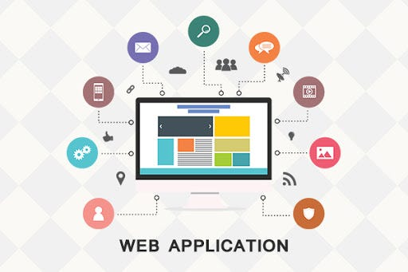

Web Application
Category: Fundamental Web Concepts
Definition
A Web Application is a client/server application that uses a web browser as its client program. It performs an interactive service by connecting with servers over the Internet (or Intranet).
Key Characteristics
- Dynamic Content: Unlike a static website, a web application presents content tailored to user behavior and request parameters.
- Interaction: It allows users to perform tasks like managing money, booking travel, or purchasing goods.
- Concurrency: It manages multiple users accessing a single web-based resource at the same time.
- Database Connectivity: It provides facilities to connect to a database so content can be kept in permanent storage and retrieved when required.
- Reliability: It utilizes the transactional services of a database so that updates to the content are reliable and consistent.
- Scalability: It leverages underlying hardware and software infrastructure to run across multiple machines.
- Security: It can include declarative, role-based security to allow or deny access to specific resources based on user roles.
How it Works
The process follows a specific cycle:

Figure 1: The interaction between the client, web server, application server, and database.
- The user triggers a request to the Web Server via a browser.
- The Web Server forwards the request to the Web Application Server.
- The Application Server performs the task (e.g., querying a database).
- The results are sent back to the Web Server and finally displayed to the user.